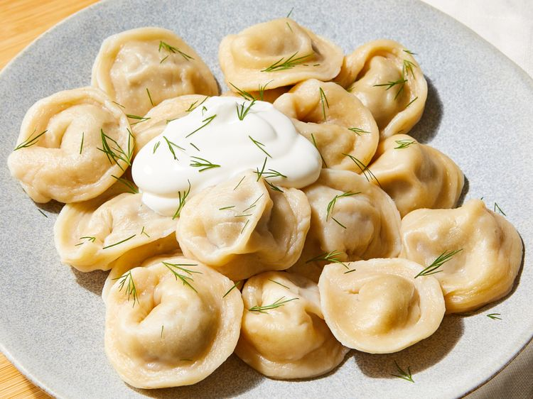

Pelmeni
Back to Home

Pelmeni are a type of Russian dumpling, typically filled with minced meat and wrapped in thin dough. They are often served with sour cream or vinegar.
Ingredients:
- 1 large egg
- 1 teaspoon vegetable oil
- 1 teaspoon salt
- 3/4 cup of warm water
- 3 cups all purpose flour
- 1 tabblespoon all puropse flour for dusting
- 18 ounces ground beef
- 1 small onion, finely chopped
- 1 tablespoons ice-cold water
- freshly ground pepper
Instructions:
- Gather all ingredients.
- Make dough: Combine egg, oil, and salt in a liquid measuring cup; add enough warm water to fill to 1 cup.
- Pour into a large bowl and knead in 3 cups flour until smooth and elastic
- Let the dough rest for 30 minutes.
- Meanwhile, make filling: Combine ground beef, onion, water, salt, and pepper in a medium bowl; mix thoroughly by hand or using a fork. Set aside.
- Dust a baking sheet lightly with 1 tablespoon flour; set aside.
- Roll out a portion of dough very thinly on a lightly floured surface; keep remaining dough covered with a dish towel to avoid drying out.
- Cut out 2 1/2-inch rounds with a cookie cutter.
- Place about 1 teaspoon filling on one side of each dough circle.
- Fold dough over and seal the edges using your fingers, forming a crescent.
- Join the ends and pinch them together.
- Place on the prepared baking sheet. Repeat with remaining dough and filling. Freeze pelmeni for 30 minutes to prevent them from sticking together.
- Bring a large pot of lightly salted water to a simmer. Working in batches, cook frozen pelmeni in simmering water until meat is cooked through and pelmeni float to the top, about 5 minutes.
- Continue cooking for 5 more minutes.
- Transfer to serving plates using a slotted spoon. Serve and enjoy.